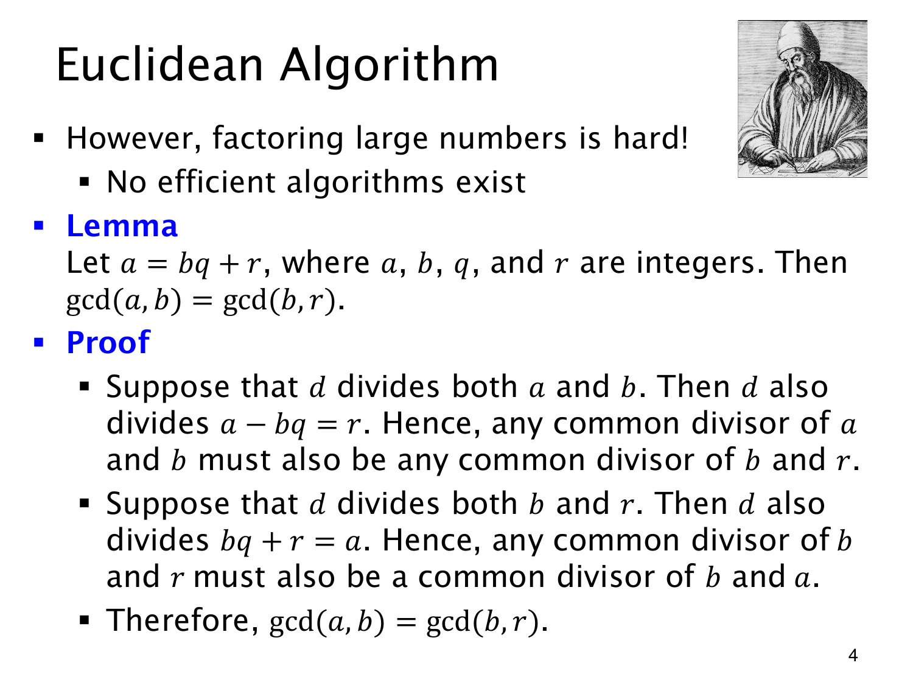

L1.13 · 第 4 页讲解原文
查看这一页课件

取余为什么不改变最大公约数
大整数先分解再求 GCD 往往不方便。欧几里得算法直接利用
a=bq+r⟹gcd(a,b)=gcd(b,r),
其中各数为整数，涉及的数对不同时为零，保证 GCD 有定义。
要证明等号，需证明两组数的公约数集合相同。若 d∣a 且 d∣b，便有 d∣(a−bq)=r，所以 d 也共同整除 b,r。反过来，若 d∣b 且 d∣r，就有 d∣(bq+r)=a，因此 d 也共同整除 a,b。
两个方向合起来给出相同的公约数集合，最大元素也就相同。只证一个方向，最多说明集合包含关系，还不能得到最大公约数相等。
若 b>0 且 r 是标准余数，0≤r<b；于是不断用 (b,r) 替换 (a,b)，数会变小，而且 GCD 保持不变。整个过程无需求素因子。
原页“没有高效分解算法”的说法用于交代动机，不是证明任何计算模型都不可能高效分解的结论。